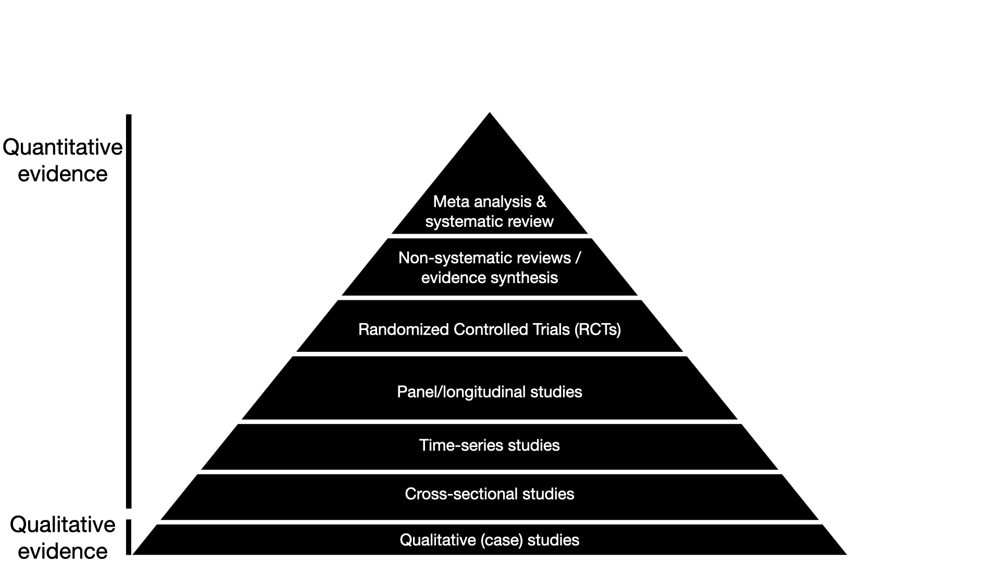
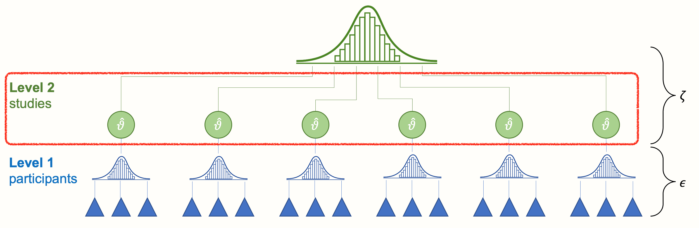
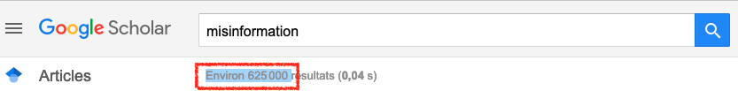
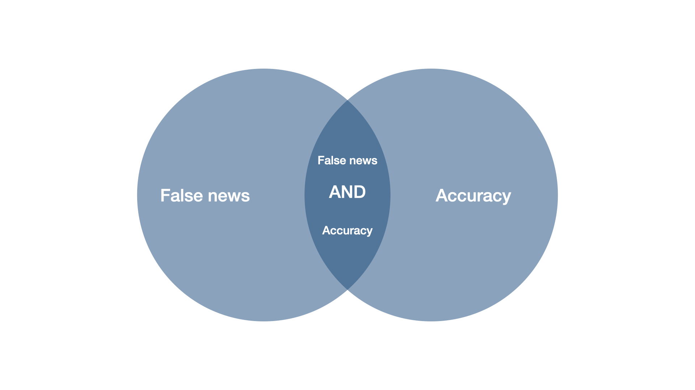
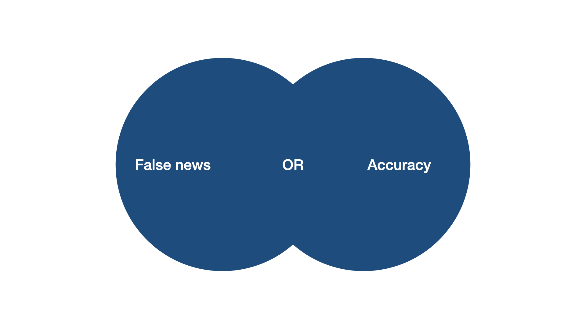
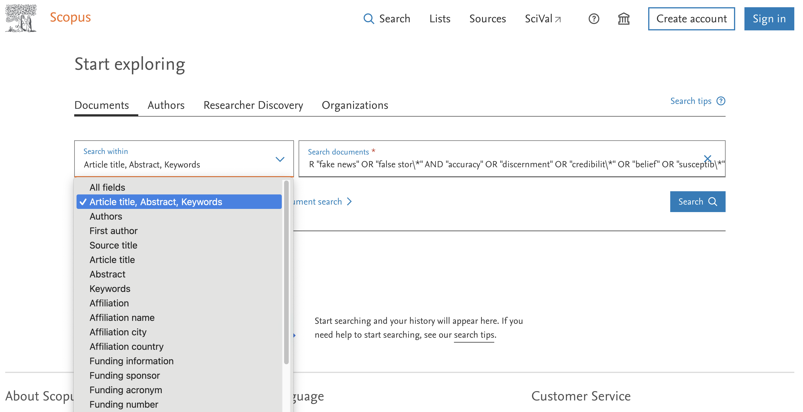
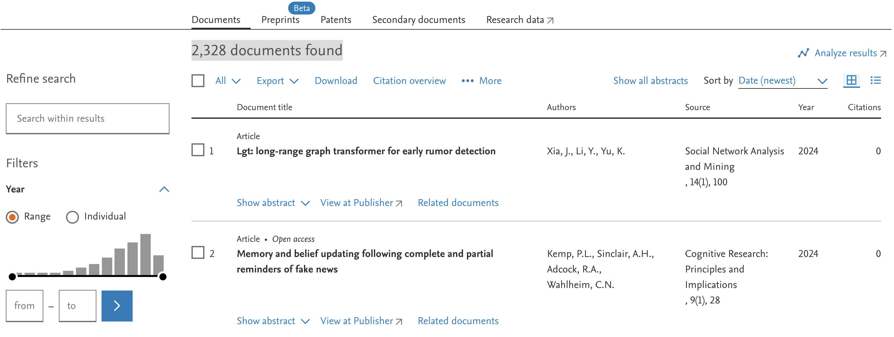
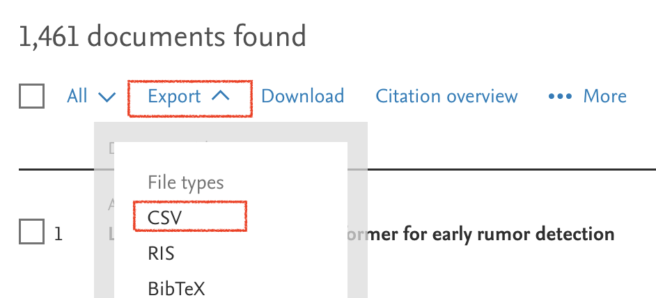
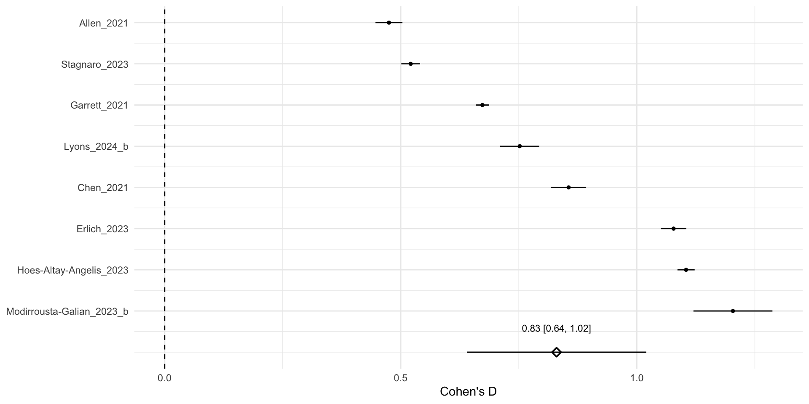

05:00
Meta Analyses
Overview
Why meta-analyses
The research question
Effect Sizes
Systematic literature search
Running a meta-analysis
Why meta-analyses?
(A typical textbook) pyramid of evidence
Why are meta-analyses at the top of the pyramid?
Results of single studies are affected by many factors:
- the country
- experimental setup
- researchers
- sample demographics…
Averaging across many studies, we get a more robust, generalizable result
The research question
Case study: “Can people tell true news from false News ?”
Pfänder, J., & Altay, S. (2025). Spotting false news and doubting true news: A systematic review and meta-analysis of news judgements. Nature Human Behaviour, 1–12. https://doi.org/10.1038/s41562-024-02086-1
Case study: “Can people tell true news from false News ?”
Define a quantifiable outcome
\[ \text{discernment} = \text{mean accuracy}_{\text{true news}} - \text{mean accuracy}_{\text{false news}} \]
Your turn:
- Download the data from:
Lyons, B., Modirrousta-Galian, A., Altay, S., & Salovich, N. A. (2024). Reduce blind spots to improve news discernment? Performance feedback reduces overconfidence but does not improve subsequent discernment. https://doi.org/10.31219/osf.io/kgfrb
- Calculate a discernment score
Effect sizes
What are effect sizes?
In Meta-analyses not individual participants, but single studies are the unit of analysis
The outcomes of these studies are called “effect sizes”.
Graphic adapted from: Harrer, M., Cuijpers, P., A, F. T., & Ebert, D. D. (2021). Doing Meta-Analysis With R: A Hands-On Guide (1st ed.). Chapman & Hall/CRC Press.
Your turn:
- Download the data from
Allen, J., Arechar, A. A., Pennycook, G., & Rand, D. G. (2021). Scaling up fact-checking using the wisdom of crowds. Science Advances, 7(36), eabf4393.
Calculate the discernment score.
How does this compare to the other study? What issue are you seeing when you want to compare the two?
05:00
Non-standardized effect sizes
…can only be directly interpreted on their original scales
| paper_id | scale | fake | true | discernment |
|---|---|---|---|---|
| Allen_2021 | 7 | 3.82 | 4.74 | 0.92 |
| Lyons_2024_b | 4 | 1.86 | 2.56 | 0.69 |
This is not great if we want to compare studies.
Standardized effect sizes
… are not dependent on specific scales
They allow us to compare effects across studies that use different outcome measures.
Cohen’s d
- Perhaps the most popular standardized effect size when comparing two groups on a continuous outcome
- The idea is to express effect sizes in units of standard deviations
Cohen’s d
If we plot the distribution of all individual accuracy ratings, we get something like below (slightly less perfect).
Cohen’s d uses the standard devations of these distributions
Cohen’s d
\[ \text{Cohen's d} = \frac{\bar{x}_{\text{true}} - \bar{x}_{\text{false}}}{SD_{\text{pooled}}} \]
with
\[ SD_{\text{pooled}} = \sqrt{\frac{SD_{\text{true}}^2+SD_{\text{false}}^2}{2}} \]
Your turn:
In which of the two studies did participants discern better? Calcuate Cohens’ d for the two studies and compare.
05:00
Interpreting Cohen’s d
“Participants in Lyons (2024) discerned better between true and false news than participants in Allen (2021), by 0.28 standard deviations”
Although widely used, this is not always easy to interpret. In psychology, as a rough guide for intepreting Cohen’s d:
- small (0.2) < medium (0.5) < large (0.8)
(but: depends a lot on the discipline, research question etc.)
If you want to play around with the interpretation of Cohen’s d, check out this guide by Kristoffer Magnusson
Systematic literature review
Tip
Literature search something you do before calculating effect sizes, of course.
But to do an effective literature search, you need to have an idea of what you are looking for.
So, it makes sense to start thinking about the effect size you want to calculate before you do the literature search.
In general, we will only very superficially talk about the literature search here.
The search string
Ideally, we want all studies that have ever been written on our research question. The more the better.
But…

We often need to be specific in our search.
The search string
When you start a meta-analysis, you often have at least a rough idea of what you are looking for/ have a paper that inspired your idea
This gives you ideas of keywords that you could look for.
The search string
This was our search string:
‘“false news” OR “fake news” OR “false stor*” AND “accuracy” OR “discernment” OR “credibilit*” OR “belief” OR “susceptib*”’
Would this search string have yielded a study called “News accuracy ratings of US adults during 2016 presidential elections”?
No, because of how boolean operators work.
Boolean operators


Boolean operators
‘“false news” OR “fake news” OR “false stor*” AND “accuracy” OR “discernment” OR “credibilit*” OR “belief” OR “susceptib*”’
Our search string, put a bit more abstractly, reads …OR…OR…AND…Or…OR…
As in math, there is a hierarchy among operators.
On Scopus (the search engine we used), OR operators are treated before AND operators.
Data bases
- Google Scholar – great in most cases, but some disadvantages (e.g. user-specific results)
There are many other data bases out there:
- Pubmed
- Scopus
- Web of Science
- Your local university library catalogue
- …
Data bases
Data bases allow very refined searches.


Data bases
Some databases also have features to export your search results as data sets.
Literature screening
There are several stages of deciding which studies to include:
- Title screening (sort out titles that are obviously irrelevant)
- Abstract screening
- Full-text screening
In particular in screening phases 2 and 3, all decisions are based on inclusion criteria (and must be documented!).
For example, some of our inclusion criteria were:
- english language
- a measure of accuracy for both true and false news
- real-world news items only
PRISMA guidelines
The whole point of a systematic search is to have an exhaustive and unbiased pool of studies.
We won’t discuss the whole process here, but if you ever do a systematic review, you’ll want to check out the PRISMA guidelines for systematic reviews and meta-analyses
Running a meta-analysis
The meta-analytic average
- A meta-analysis is basically taking an average of all effect sizes
Graphic adapted from: Harrer, M., Cuijpers, P., A, F. T., & Ebert, D. D. (2021). Doing Meta-Analysis With R: A Hands-On Guide (1st ed.). Chapman & Hall/CRC Press.
The meta-analytic average
…but not just a normal average - a weighted average.
The idea is that larger studies (with more participants/observations) are given more weight than smaller studies
This is typically done via the standard error of the effect sizes
Cohen’s d (part II): the standard error
Tip
Remember:
The standard error is a special standard deviation - the standard deviation of the sampling distribution (i.e. the–hypothetical–distribution of estimates we would expect from drawing many different samples from a population).
Cohen’s d (part II): the standard error
\[ SE_{\text{Cohen's d}} = \sqrt{ \frac{n_\text{true} + n_\text{false}}{n_\text{true} n_\text{false}} + \frac{d^2}{2(n_\text{true} + n_\text{false})} } \]
- \(d\) = Cohen’s d
- \(n_\text{false}\) = sample size of fake news items,
- \(n_\text{true}\) = sample size of true news items,
- and \(SD_{\text{pooled}}\) the pooled standard deviation of both groups (see above).
Tip
All you need to remember:
With greater sample size, smaller standard error (this should ring a bell from our class on statistical power).
Your turn:
Imagine you collected data from 9 studies
Download the meta-analysis data
meta_analysis_news.csv.Calculate Cohen’s d and its standard error (you can use this function which translates the previous formula into R code):
05:00
Calculate weigths
As noted earlier, the standard error helps us calculate a weight for each study \(k\) in our meta-analysis:
\[ w_k = \frac{1}{se^2_k} \]
- \(se^2\) = squared standard error (also called variance) of a study \(k\)
Tip
Note:
The bigger the sample size, the smaller the standard error, the greater the weight.
Calculate the meta-analytic average
Based on the standardized effect sizes and their standard errors, we can finally calculate the meta-analytic average.
\[ \hat\theta = \frac{\sum^{K}_{k=1} \hat\theta_kw_k}{\sum^{K}_{k=1} w_k} \]
- \(\hat\theta\) = estimate of the meta-analytic average
The meta-analytic average
In practice, you’ll always use existing R packages for these calculations.
There are many packages out there, but a popular one is the metafor package
Your turn:
Can people discern between true and false news? Use the metafor package and its rma.uni() function (check documentation by clicking on the function) to calculate the meta-analytic average.
Tip
you don’t need to specify the
weightsargumentsyou only need to specify
yi,seianddata
05:00
Forest plot
Points are effect sizes, bars are 95% confidence intervals - an indicator of statistical significance we haven’t discussed yet. The idea is that if they exclude 0, that’s like having a p-value below 0.05: the estimate is statistically significant.
Things we couldn’t cover (but you should know are possible)
There are many other standardized effect sizes for different variably types
We have only discussed fixed effects meta-analyses. Yet, for some research questions and data types, it is better to use slightly more complex, random effects meta-analyses
To test the effect of context factors, you can also run so called “meta-regressions”
Meta-analyses can reveal publication bias or p-hacking (see our class the replication crisis). Meta-analyses typically include several tests that can be indicative of this